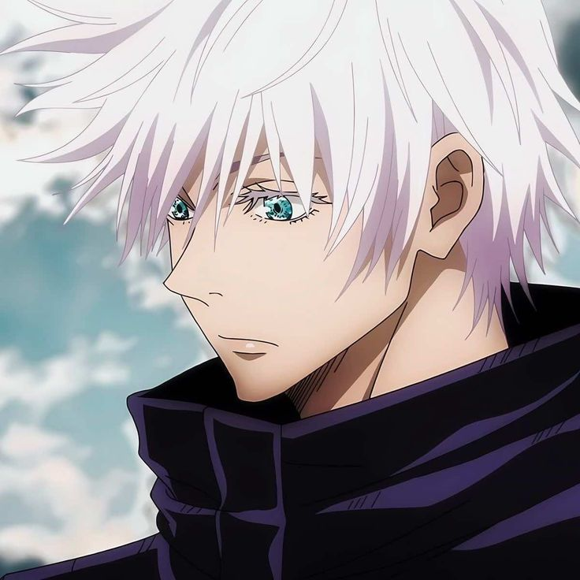
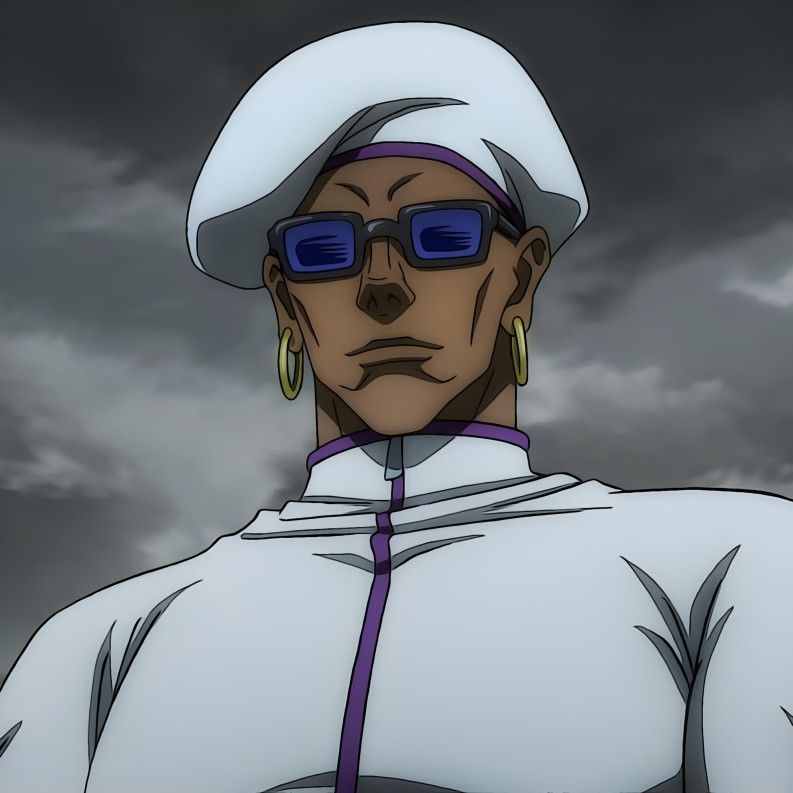

Protagonists
Yuta Okkotsu
Haunted by the curse of his childhood friend Rika.
Rika Orimoto
Childhood friend turned cursed spirit.

Gojo Satoru
The strongest modern sorcerer.
Toge Inumaki
A sorcerer who wields powerful cursed speech.

Maki Zen’in
A skilled fighter with no cursed energy.
Antagonists

Suguru Geto
A fallen sorcerer who commands curses.
Manami Suda
A loyal follower of Geto.

Miguel Oduol
An overseas sorcerer aligned with Geto.